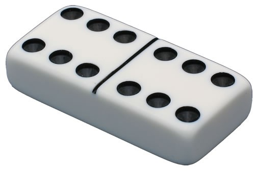

We've made lots of boxes in THREE. Now we'll turn a box into a die (one of a set of dice) and into a domino. All this means is we take a white box and put some dots on the side. For dice, we put a different number of dots on each side. For a domino, we put to sets of dots on the top.
We've provided you with a simple texture with all 6 patterns of dots (1-6) in the file Textures\dice_texture.png. You are welcome to make a nicer texture file (don't forget to include it in the repo when you hand it in!). If you make a texture, it should contain all 6 dot patterns.
For both the dice and domino(s) it is OK if they are simply boxes - as long as they have the right texture on them. If you want to be fancy, you can bevel the edges (real dice and dominos typically do not have square edges).
Make two dice. This means defining a single class for dice and then making two instances. You should use the CS559 framework for this (so the new class is a subclass of GrObject).
Place the dice on the groundplane. They should be oriented so the numbers on top are different. (no doubles). This should be as simple as rotating one of the dice.
There is a set of files 5-1-dice.html and 5-1-dice.js for you to put your work into. Load 5-1-dice.html to see it.
Note: it is possible to do this assignment by using a THREE Box geometry and assigning a different material to each side. However, it is probably easier to define your own geometry and assign correct texture coordinates. And this is good practice for future things.
Make at least one domino. If you make only one domino, it should be a double 6.

It's OK if your domino is just a box (twice as wide as it is deep, relatively thin). You need to have the dots on both sides of the top. The line between the sides is optional.
You can use the texture you used for the dice for this exercise. (this is the recommended/expected way to do the assignment, but it is not required)
Note: you could try to do this by making a single texture for the entire top of the domino (with two sixes on one texture). Please don't do this.
The requirement is to make one domino. A double six. If you're ambitious (and want bonus points) you can make a set of dominos (up to 6-6). Here's what a set of dominos looks like in a drawing. You could even arrange the dominos on the table in a legal way (numbers have to match - if you don't know the rules for dominos, don't worry).
It is acceptable if your domino is a white box except for the black dots. You can round or bevel the edges to make them look nicer.
There is a set of files 5-2-domino.html and 5-2-domino.js for you to put your work into. You should use the CS559 Framework, and define a new class for dominos. If you really wanted to do it right, the constructor could take 2 numbers (one for the number of dots to appear on each side). The preferred way to implement this is to define your own Geometry, where the top of the box is made of at least 4 triangles, with texture coordinates that put the right numbers where they should go.
Here's the domino page: 5-2-domino.html.
While you can get bonus points for this page, I recommend you put your energy and creativity for making things on the buildings page which is the next exercise. The things you make for that exercise will be useful in future Graphics Town assignments.